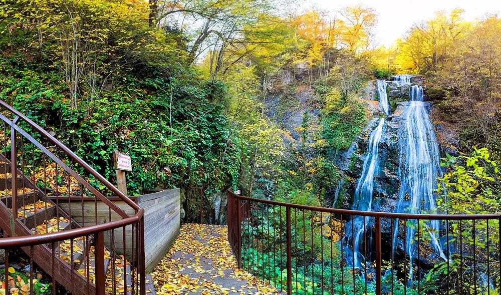
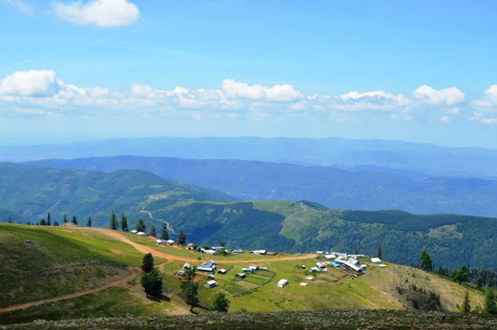

Yaşadığım Şehir: Düzce
Zonguldak'ta doğup İzmir'de büyümeye başlasam da, ilkokul yıllarımdan beri hayatımın büyük bir kısmını Düzce'de geçirdim. Batı Karadeniz'in bu huzurlu şehri, benim için sadece bir ikametgah değil, tüm çocukluk ve gençlik anılarımın ev sahibi.



